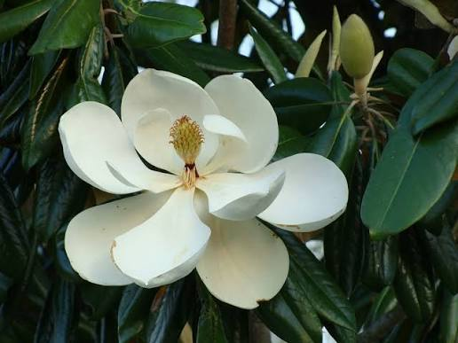
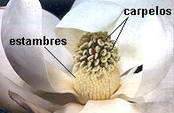
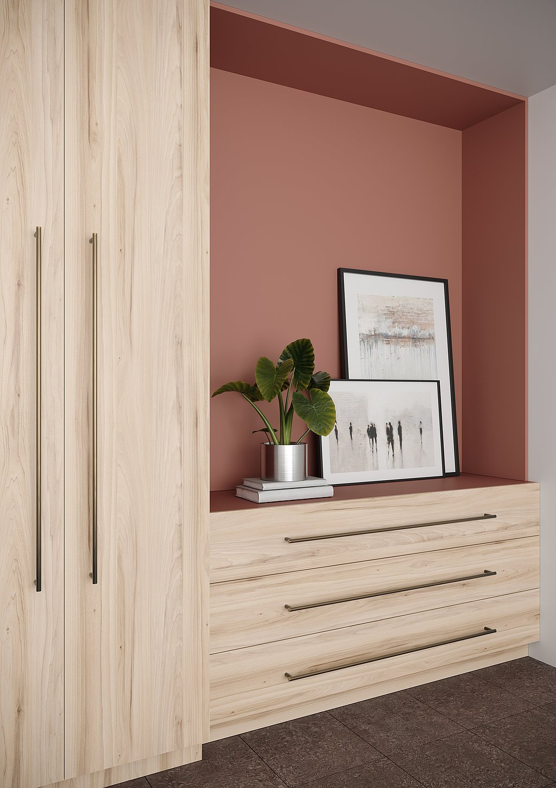
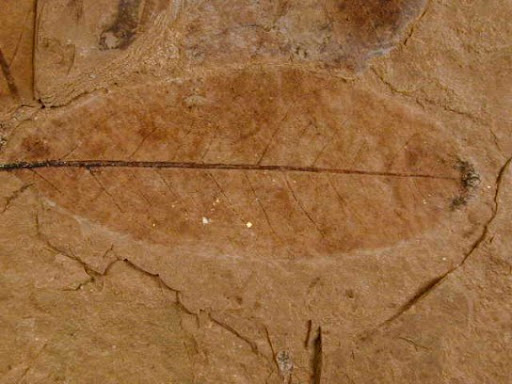

Taxonomia
- Reino: Plantae
- Filo: Tracheophyta
- Clado: Angiospermas
- Classe: Magnoliopsida
- Ordem: Magnoliales
- Família: Magnoliaceae
- Gênero: Magnólia
Conheça um pouco sobre a planta Magnólia!




A Magnólia grandiflora é uma planta primitiva e exuberante, existindo no planeta há mais de 90 milhões de anos. Ela se destaca no paisagismo mundial por suas flores grandes, esculturais e intensamente perfumadas.


6 a 30 metros, dependendo da espécie. A grandiflora possui de 12 a 24 metros.
Madeira relativamente macia, casca amarga (plantas medicinais com sabor intenso, utilizadas para problemas digestivos e hepáticos), mais ou menos aromáticos.
Espessa, suculenta e rica em reservas de nutrientes (carnosa), mas com textura frágil e macia (delicada).
Ramo: Apresentam cicatrizes das folhas e estípulas que caíram.
Broto: Pontiagudo.
Largas, verde-escuras e brilhantes. Podem ser caducas (caem uma vez por ano) ou persistentes (mantêm durante o ano todo), finas ou grossas. Possuem nervuras (feixes vasculares, xilema e floema, responsáveis pela sustentação e transporte de seiva), normalmente acompanhadas de estípulas (pequenas estruturas em forma de lâmina ou escama, geralmente em pares, localizadas na base do pecíolo).
Grandes, pétalas aveludadas e perfume suave. São solitárias, localizadas na ponta dos ramos, sem pedúnculo (haste que sustenta a flor ou fruto) ou com pedúnculo curto. Normalmente brancas ou amareladas; dependendo da espécie podem ser rosa e roxa ou verde e amarela. Floresce geralmente na primavera.

Fruto: Tem forma de cone e é formado por vários folículos (pequenas estruturas que se abrem quando maduras), geralmente de cor vermelha ou marrom.
Sementes: Envolvidas por uma camada carnosa avermelhada, ficam penduradas por um longo filamento quando maduras.

Estacas retiradas de brotos, após preparação com hormônio para enraizamento, são plantadas em substrato. Após algumas semanas, a raiz já estará desenvolvida e pronta para replantio.

Um pequeno corte é feito em um broto, sem separá-lo da planta-mãe, aplicando hormônio enraizador e envolvendo com musgo úmido coberto com plástico. Após algumas semanas, a raiz fica visível no musgo e o broto pode ser cortado e plantado.

Após serem coletadas e limpas, devem ser mantidas em refrigeração por 3 meses. Depois que a casca estoura, já podem ser retiradas da geladeira e plantadas no solo.
Prefere regiões de clima temperado a subtropical. Sofre com verões muito quentes e secos, preferindo ambientes úmidos e sombreados. Suporta bem o frio e temperaturas baixas.
Bem drenado, rico em matéria orgânica e levemente ácido. Desde que seja profundo, leve e fértil, desenvolve-se bem mesmo sem muitos cuidados.
Pleno sol ou meia-sombra.
Regular, principalmente nos primeiros anos.
Apenas para remoção de galhos secos ou doentes.



